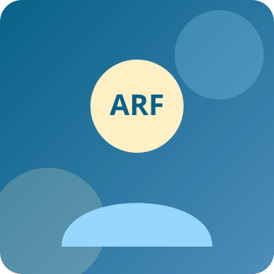

Halo, perkenalkan saya
Ahmad Raja Fadhil
Mahasiswa tingkat akhir S1 Teknologi Informasi di Telkom University & Center of Excellence Intern di PT Pegadaian. Tersertifikasi oleh Microsoft (AI-900, AI-102, DP-600) dan Alibaba Cloud Gen AI. Mengubah data kompleks menjadi insight strategis serta solusi AI & Web yang berdampak nyata.

Tentang Saya
Penghargaan & Pencapaian Utama
- Top 10% Graduates (Distinction) — AI Engineer Cohort, Coding Camp powered by DBS Foundation (dari 2.800 peserta terpilih).
- Best Student — Talent Class Batch 19: Excel for Business Intelligence.
- Best Participant — Talent Class Batch 16: Data Science Fundamentals.
- Best Participant — Talent Class Batch 15: Introduction to Cloud Computing.
Menjembatani Teori Akademik dengan Solusi Industri Berbasis Data & AI
Saya adalah mahasiswa tahun terakhir jurusan Teknologi Informasi di Universitas Telkom (2023–2027) yang memiliki antusiasme tinggi di bidang Data Analytics, Business Intelligence, dan Artificial Intelligence. Saat ini, saya aktif berkontribusi sebagai Digital Center of Excellence Intern di PT Pegadaian serta berperan sebagai Google Student Ambassador.
Dengan keahlian teknis menggunakan Python, SQL, TensorFlow, serta perangkat BI (Tableau, Power BI, Looker Studio), saya terbiasa mengolah jutaan baris data menjadi actionable insights dan membangun otomasi alur kerja. Pengalaman saya mencakup evaluasi 10+ POC strategis berskala global, pengelolaan data pelabuhan nasional di Kementerian Perhubungan RI, peningkatan profitabilitas bisnis di Tape Koe, hingga pembangunan sistem Full-Stack AI dan Computer Vision melalui program DBS Foundation, Asah by Dicoding, dan Celerates.
Proyek Data, AI & Web
Sertifikasi Global (Microsoft, Google, Alibaba)
Pengalaman Magang & Cohort Industri
Penghargaan Best Participant
Keahlian & Sertifikasi
Kombinasi keahlian analisis data, pemodelan kecerdasan buatan, pengembangan aplikasi web, serta komunikasi profesional.
Proyek Pilihan
Proyek end-to-end mulai dari dashboard Business Intelligence jutaan transaksi, model Machine Learning & Computer Vision, hingga aplikasi web Full-Stack.
Pengalaman & Pendidikan
Perjalanan profesional di BUMN, kementerian, perusahaan swasta, dan program akselerasi teknologi nasional.
Hubungi Saya
Tertarik berdiskusi mengenai peluang kerja di bidang Data Analytics, Business Intelligence, AI Engineering, atau kolaborasi proyek? Jangan ragu untuk menghubungi saya!
Informasi Kontak Langsung
Saya berdomisili di area Jabodetabek (Bogor / Jakarta) dan siap untuk kesempatan kerja On-site, Hybrid, maupun Remote.